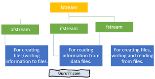
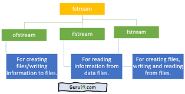

Ce projet avait pour objectif de créer un logiciel en C++ avec une interface graphique Qt,
permettant de calculer le temps de trajet entre des villes françaises. Il utilise des
données issues de fichiers CSV pour estimer les temps à l’aide de l’algorithme de
Floyd-Warshall. L'utilisateur peut ainsi obtenir rapidement le temps de conduite
entre deux villes ou entre plusieurs villes.
- Consulter les informations (classement, longitude, latitude, densité, ...) d'une ville
- Trouver le temps de trajet entre deux villes selectionnées
- Construire un tableau de temps de trajet entre un ensemble de villes selectionnées
- Connaître le meilleur ordre pour visiter un ensemble de villes choisies
- Determiner le meilleur emplacement pour un dépôt qui doit desservir un ensemble de villes
- Visualiser une carte montrant les villes de France
-
Ce projet m’a permis de consolider et développer plusieurs compétences clés :
- Programmation en C++, particulièrement dans la manipulation de matrices, de fichiers CSV et la structuration du code
- Utilisation de Qt pour créer une interface graphique intuitive permettant une interaction avec l’utilisateur
- Gestion et traitement de données réelles, avec des jeux de données partiels et imparfaits
- Optimisation et modélisation de problèmes, dans les fonctionnalités avancées (ordre de visite, placement de dépôt...)
 

Editeurs de code et bibliothèques C++
- Création de l’interface avec Qt, qui demande de bien organiser les signaux/slots, la logique d’affichage et les interactions
- Affichage lisible des résultats, notamment pour le tableau croisé de trajets entre plusieurs villes
- Gestion des performances, car l’algorithme a une complexité élevée (O(n³)), ce qui peut ralentir l’application si mal implémentée.
- Calcul du plus court chemin dans une phase d’initialisation (au lancement) pour éviter de recalculer à chaque demande
- Création des fonctions pour parser les fichiers et utilisation des structures de type dictionnaire pour relier les noms de villes à leurs indices